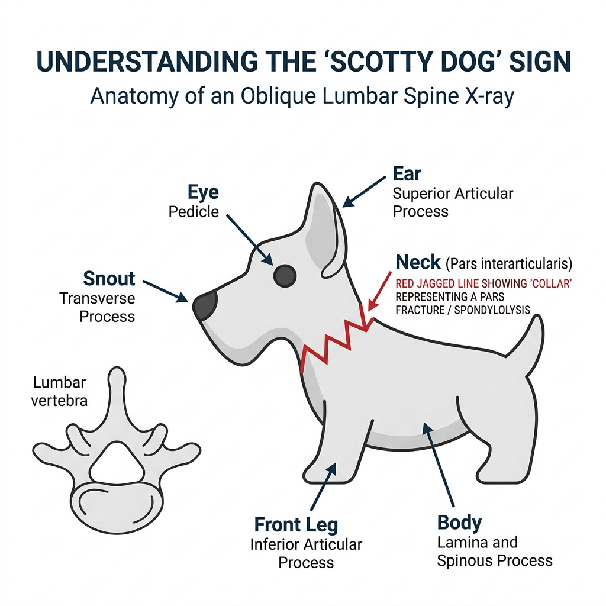
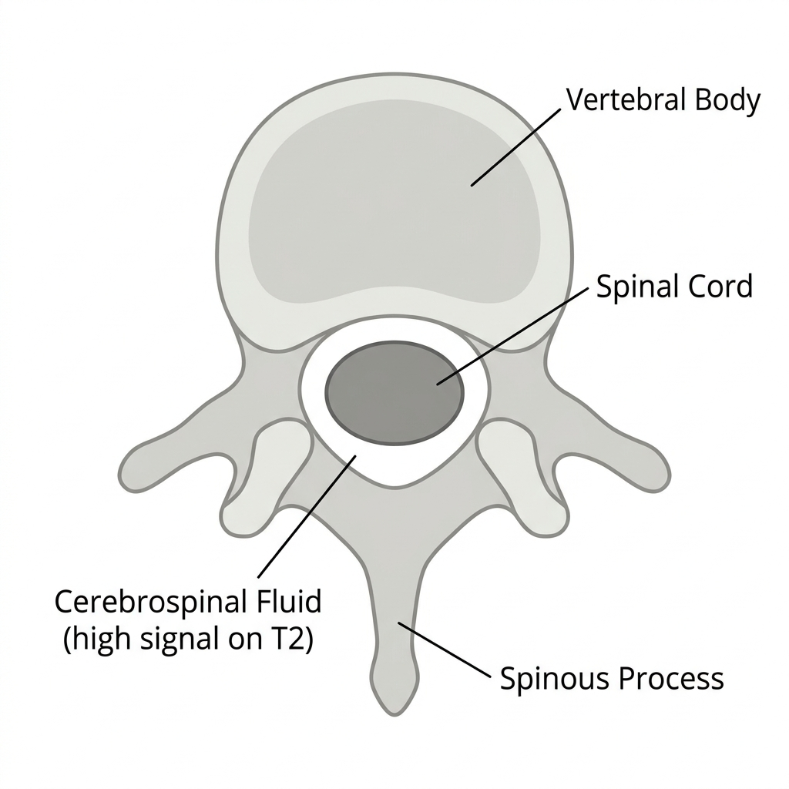

脊椎骨與椎間盤解剖
脊椎是由 33 塊脊椎骨堆疊而成，中間夾著椎間盤作為緩衝。
脊椎骨 (Vertebrae)
- 椎體 (Vertebral body)：位於脊椎的「前方 (Anterior)」，是主要承受重量的結構。
超級陷阱：考題常說「每一節脊椎前方都有椎體」。這是錯的！第一頸椎 C1 (寰椎 Atlas) 沒有椎體！ - 小面關節 (Facet joint)：關節面覆蓋著透明軟骨 (Hyaline cartilage)（注意，不是纖維軟骨！），關節腔內有滑液。關節囊上有豐富的痛覺神經末梢，是脊椎退化性關節炎疼痛的主要來源。
- 寰樞關節 (Atlantoaxial joint)：由 C1 與 C2 組成。C2 向上突出的齒突 (Dens / Odontoid process) 是這個關節的核心，負責頭部的左右旋轉 (Rotation)。
- 胸椎 (Thoracic spine)：胸椎兩側有肋骨小面 (Costal facet) 與肋骨相連，這使得胸椎的活動度被大幅限制，是整條脊柱中最不靈活的一段。
椎間盤 (Intervertebral disc)
人體總共有 23 個椎間盤，大約佔了整個脊柱長度的 20~33%。
陷阱：椎間盤並不是「每一節之間都有」。C0-C1 與 C1-C2 之間是沒有椎間盤的！
- 髓核 (Nucleus pulposus)：位於中央，含有大量親水性的蛋白聚醣 (Proteoglycans) 與水份，主要由 Type II 膠原蛋白組成。
- 纖維環 (Annulus fibrosus)：外圈強韌的結構，由纖維軟骨與 Type I 膠原蛋白組成。
- 營養來源：椎間盤是無血管的，它的營養完全仰賴上下軟骨終板 (End plate) 的被動擴散 (Passive diffusion)。
Which of the following statements about the structure of the spine is FALSE? (from BM110)
關於脊椎結構的敘述，下列何者為非？
解答與解析
答案：(A)
解析：老師最愛考的例外！C1 (寰椎 Atlas) 是沒有椎體 (Vertebral body) 的，因此選項說「每一節都有」是錯的。
後韌帶複合體 (Posterior Ligamentous Complex)
脊椎要能穩定不滑脫，後方的韌帶群扮演了煞車的角色。後韌帶複合體 (PLC) 包含：
- 棘上韌帶 (Supraspinous ligament)
- 棘間韌帶 (Interspinous ligament)
- 黃韌帶 (Ligamentum flavum)
- 小面關節囊 (Facet joint capsule)
考題超愛問：「下列何者不屬於後韌帶複合體 (PLC)？」
常見的錯誤選項有兩個：
1. 後縱韌帶 (Posterior longitudinal ligament, PLL)：雖然名字有「後」，但它其實貼在「椎體的正後方」，屬於脊椎的中柱 (Middle column)，不屬於後韌帶複合體。
2. 棘突 (Spinous process)：它是骨頭！不是韌帶！
Which part of spine does NOT belong to the posterior ligamentous complex? (from BM111)
脊椎的哪一個部分不屬於後韌帶複合體？
解答與解析
答案：(C)
解析：後縱韌帶 (PLL) 位於椎體的後緣，被歸類在脊椎的中柱 (middle column) 穩定結構中，不屬於後方的 PLC。
影像學：蘇格蘭梗犬與 MRI
X光片上的蘇格蘭梗犬 (Scotty Dog Sign)
當我們照腰椎的斜位 X 光片 (Oblique view) 時，脊椎後方的骨頭結構會疊影成一隻可愛的蘇格蘭梗犬。如果狗狗的「脖子」斷了，就代表發生了脊椎峽部裂 (Spondylolysis)。

- 狗鼻子 (Snout)：橫突 (Transverse process)
- 狗眼睛 (Eye)：椎弓根 (Pedicle)
- 狗脖子 (Neck)：關節間部 (Pars interarticularis)。此處骨折稱為峽部裂。
- 狗耳朵 (Ear)：上關節突 (Superior articular process)
- 狗前腿 (Front leg)：下關節突 (Inferior articular process)
Which statement about lumbar spine x-rays is INCORRECT? (from BM111)
關於腰椎 X 光片的敘述，下列何者錯誤？
解答與解析
答案：(A)
解析：橫突 (Transverse process) 對應的是狗狗的「鼻子 (Snout)」，而不是尾巴！
脊椎 MRI 橫切面 (Axial T2-weighted)
在 T2 加權的 MRI 影像中，水份會呈現亮白色 (High signal)。

在看 MRI T2 橫切面時，中央椎管內會有一圈「非常亮的白色環」，裡面包著一個「深灰色的圓形」。
考題會用箭頭指著外圈那層「白色的水」，騙你說那是脊髓 (Spinal cord)。
錯！外圍發亮的水是腦脊髓液 (CSF)，裡面那個深灰色不發亮的實心構造才是脊髓 (Spinal cord)！
一分鐘考前秒殺心法
- 椎體 (Vertebral body)：存在於每一節，C1 例外 (無椎體)。
- 椎間盤 (Disc)：營養靠上下終板「擴散」。C1-C2 之間沒有椎間盤！
- 後韌帶複合體 (PLC)：包含棘上、棘間、黃韌帶、小面關節囊。「後」縱韌帶不屬於 PLC！
- Scotty Dog (斜位 X 光)：
- 狗鼻子 = 橫突
- 狗眼睛 = 椎弓根
- 狗脖子 = 關節間部 (Pars) $ ightarrow$ 斷掉變項圈 = Spondylolysis
- T2 MRI 橫切面：發亮的是水 (CSF)，中間黑灰色的才是脊髓 (Spinal cord)。
必考單字與諧音記憶
點擊右側按鈕顯示中文與獨家記憶法：
Vertebral body 顯示中文與記憶法
椎體
💡 解剖： 脊椎前方的承重主體，跨越前柱 (Anterior column) 到中柱。
Pedicle 顯示中文與記憶法
椎弓根
💡 解剖： 連接椎體與後方結構的橋樑。
💡 影像： 在 X 光斜位片上，它是蘇格蘭梗犬的「眼睛」。
Pars interarticularis 顯示中文與記憶法
峽部
💡 解剖： 上下關節突之間的狹窄處。
💡 影像： 狗狗的「脖子」。如果斷掉就是 Spondylolysis (峽部裂)，狗狗會戴項圈。
Spondylolysis 顯示中文與記憶法
脊椎峽部裂
💡 字根： Spondylo (脊椎) + lysis (裂開/溶解)。
💡 記憶： 狗狗脖子斷掉。
Ligamentum flavum 顯示中文與記憶法
黃韌帶
💡 字根： flavum (黃色)。
💡 功能： 位於後柱，限制脊椎過度彎曲 (Flexion)。
Nucleus pulposus 顯示中文與記憶法
髓核
💡 特色： 椎間盤的中心，富含蛋白多醣 (Proteoglycan) 與膠原蛋白，像水球一樣抵抗垂直壓力 (Axial load)。
歷年考題純享版
以下羅列出本單元相關的歷屆考題。
🔥 紅色發光外框代表該題型在 113、112、111、110 年連續考了四次！這些絕對是老師的命題題庫，進考場前一定要背到爛掉！
Which of the following statements about the structure of the spine is FALSE? (from BM110)
關於脊椎結構的敘述，下列何者為非？
解答與解析
答案：(A)
解析：老師最愛考的例外！C1 (寰椎 Atlas) 是沒有椎體 (Vertebral body) 的，因此選項說「每一節都有」是錯的。
Which part of spine does NOT belong to the posterior ligamentous complex? (from BM111)
脊椎的哪一個部分不屬於後韌帶複合體？
解答與解析
答案：(C)
解析：後縱韌帶 (PLL) 位於椎體的後緣，被歸類在脊椎的中柱 (middle column) 穩定結構中，不屬於後方的 PLC。
Which statement about lumbar spine x-rays is INCORRECT? (from BM111)
關於腰椎 X 光片的敘述，下列何者錯誤？
解答與解析
答案：(A)
解析：橫突 (Transverse process) 對應的是狗狗的「鼻子 (Snout)」，而不是尾巴！
Which of the following statements about the structure of the spine is FALSE? (from BM110)
關於脊椎結構的敘述，下列何者為非？
解答與解析
答案：(A)
解析：老師最愛考的例外！C1 (寰椎 Atlas) 是沒有椎體 (Vertebral body) 的，因此選項說「每一節都有」是錯的。
Which part of spine does NOT belong to the posterior ligamentous complex? (from BM111)
脊椎的哪一個部分不屬於後韌帶複合體？
解答與解析
答案：(C)
解析：後縱韌帶 (PLL) 位於椎體的後緣，被歸類在脊椎的中柱 (middle column) 穩定結構中，不屬於後方的 PLC。
Which statement about lumbar spine x-rays is INCORRECT? (from BM111)
關於腰椎 X 光片的敘述，下列何者錯誤？
解答與解析
答案：(A)
解析：橫突 (Transverse process) 對應的是狗狗的「鼻子 (Snout)」，而不是尾巴！
Which of the following statements about the structure of the spine is FALSE? (from BM110)
關於脊椎結構的敘述，下列何者為非？
解答與解析
答案：(A)
解析：老師最愛考的例外！C1 (寰椎 Atlas) 是沒有椎體 (Vertebral body) 的，因此選項說「每一節都有」是錯的。
Which part of spine does NOT belong to the posterior ligamentous complex? (from BM111)
脊椎的哪一個部分不屬於後韌帶複合體？
解答與解析
答案：(C)
解析：後縱韌帶 (PLL) 位於椎體的後緣，被歸類在脊椎的中柱 (middle column) 穩定結構中，不屬於後方的 PLC。
Which statement about lumbar spine x-rays is INCORRECT? (from BM111)
關於腰椎 X 光片的敘述，下列何者錯誤？
解答與解析
答案：(A)
解析：橫突 (Transverse process) 對應的是狗狗的「鼻子 (Snout)」，而不是尾巴！
Which of the following statements about the structure of the spine is FALSE? (from BM110)
關於脊椎結構的敘述，下列何者為非？
解答與解析
答案：(A)
解析：老師最愛考的例外！C1 (寰椎 Atlas) 是沒有椎體 (Vertebral body) 的，因此選項說「每一節都有」是錯的。
Which part of spine does NOT belong to the posterior ligamentous complex? (from BM111)
脊椎的哪一個部分不屬於後韌帶複合體？
解答與解析
答案：(C)
解析：後縱韌帶 (PLL) 位於椎體的後緣，被歸類在脊椎的中柱 (middle column) 穩定結構中，不屬於後方的 PLC。
Which statement about lumbar spine x-rays is INCORRECT? (from BM111)
關於腰椎 X 光片的敘述，下列何者錯誤？
解答與解析
答案：(A)
解析：橫突 (Transverse process) 對應的是狗狗的「鼻子 (Snout)」，而不是尾巴！